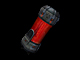
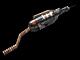

Technician
Role
Supplies and heals teammates with combined ammo/health Stroyent Cells, can revive fallen teammates, and create Spawn Hosts from GDF corpses.
Specialty
Heal and Revive
Weapons
Equipment
- Stroyent Cells
- Stroyent Tool
Instructional info

Stroyent Cells:
While the GDF get Health Packs from their Medics and Ammo Packs from their Field Ops, the Strogg use a single combined Health/Ammo resource called Stroyent, supplied by the Technician class in the form of Stroyent Cells. Technicians should equip Stroyent Cells and drop them near your wounded or in combat teammates or near teammates calling for health or ammo which is displayed on the mini map. When your teammates walk over a Stroyent Cell a fraction of their health and ammo will be restored. Drop as many Stroyent Cells as you can but keep in mind you can only drop as many Cells as your Technician energy allows. As the Technician energy replenishes you can drop more Cells. It’s recommended that the Technician assist in the battle or revive teammates while his Technician energy is replenishing.

Stroyent Tool:
Revive - To revive a teammate, use the Stroyent Tool on a fallen teammate calling for assistance (these teammates will be laying on their back helplessly reaching for you) once close enough an icon will appear prompting revive. Use the Use Key ("Default F") to select the Stroyent Tool or select the Stroyent Tool manually from your weapon list and press the Use Key ("Default F") again to revive the teammate. Suggest dropping some Stroyent Cells to fully heal the revived teammates.
Spawn Hosts - Only the Technician can create spawn hosts out of dead GDF infantry, but it takes longer to revive then GDF Medics. To create spawn hosts approach dead GDF infantry and hold the Use Key ("Default F") on their corpse from a close proximity. A progress bar will appear and once the GDF infantry is converted a Strogg player can select the spawn host when he comes into contact with it and then activate the spawn location from the limbo menu as a spawn point.
Stroyent Allocation:
Strogg infantry have the unique ability to allocate their Stroyent supplies from their weapon to their health and vice versa [ - / + Default Keys]. This ability is extremely useful when you are about to die or when you are out of ammo. Keep in mind that you loose a fraction of Stroyent with every conversion.
Grenades:
- All grenades can be thrown slightly further by holding down the Fire key [Mouse1 Default].
- Strogg grenades have an alt fire option [Mouse2 Default] which makes them a sticky grenade sticking to walls and or vehicles.
- You can also use your grenades to harmlessly explode GDF mines.